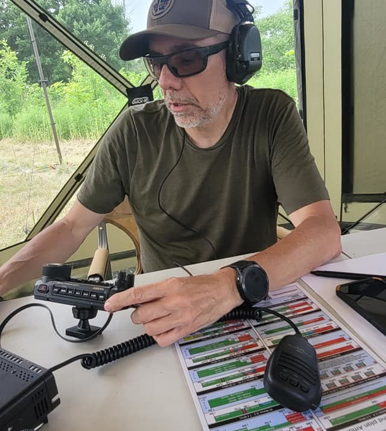

Amateur radio operator from Quebec, Canada. Building open-source tools for emergency communications, APRS tracking, and packet radio — because when everything else goes down, radio still works.

Bilingual Debian-based Linux distribution for amateur radio emergency communications. A ready-to-deploy operating system with digital mode software, Winlink, and VARA pre-installed.
Linux Debian EmCommDesktop APRS tracking and mapping application with Search & Rescue object management. Connects to Kenwood handhelds via Bluetooth or Direwolf TNC.
.NET 8 APRS SARFirst Canadian hub station on The Packet Radio RF Forwarding Network. 24/7 BBS, Winlink RMS, Chat, Weather, and News over VARA HF on 40m and 80m.
VARA HF BBS PacketI'm a licensed amateur radio operator based in Quebec, Canada. My focus is on emergency communications (EmComm), digital modes, and building tools that help the ham radio community be better prepared when traditional infrastructure fails.
I maintain and develop several open-source projects aimed at making amateur radio more accessible — from a complete Linux OS tailored for EmComm deployments, to an APRS mapping application built for Search & Rescue operations, to running a 24/7 packet radio BBS hub connecting Canada to the TPRFN network.
I believe in the ham radio spirit: share knowledge, build community, help each other. All my projects are open source or freely available.